薬学管理料
薬学的有害事象等防止加算新設
- 疑義照会・事前提案により処方変更された場合に算定（残薬調整のみは対象外）
- 区分イ〜ハ：50点／ニ：30点
画面1：区分ハ（かかりつけ）を算定する場合
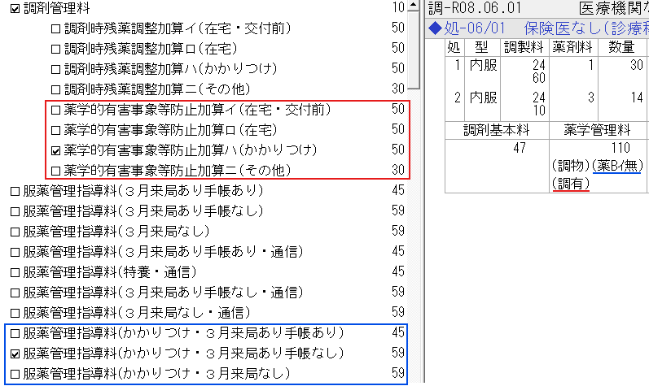
画面2：区分ニ（その他）を算定する場合
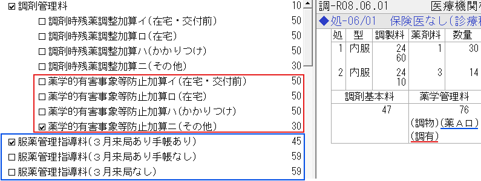
区分イのみ
- 相談年月日
- 変更内容（同種同効薬剤形用量用法 等から選択）
区分ロ〜ニ
- 照会内容の要点（重複投薬相互作用アレルギー歴年齢/体重肝腎機能授乳妊婦 等から選択）
調剤時残薬調整加算新設
- 疑義照会または処方箋指示で残薬調整し日数変更した場合に算定
- 原則7日分以上の変更が必要。区分イ〜ハ：50点／ニ：30点
画面1：区分ハ（かかりつけ）を算定する場合
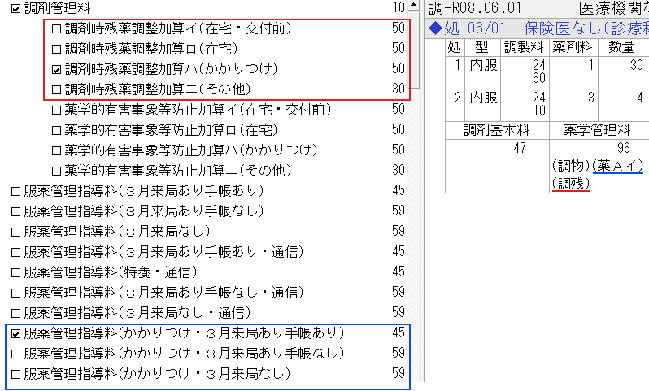
画面2：区分ニ（その他）を算定する場合
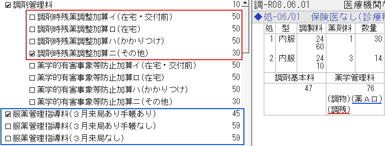
区分イのみ
- 相談年月日
区分ロ〜ニ・6日分以下の変更の場合
- 調整する必要性（高額医薬品治療終了日調整投与間隔が長い薬剤 等から選択）
- 変更のあった主な薬剤名
服薬管理指導料変更
- かかりつけ薬剤師指導料が廃止され、服薬管理指導料に統合
- 区分・略称が変更（薬指→薬Aイ／薬Bイ など）
画面：薬学管理料算定画面
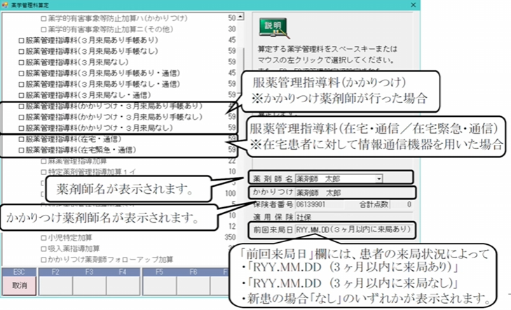
在宅患者の例外ケースのみ
- 在宅患者訪問薬剤管理指導料を算定中の患者について、別の疾病・負傷に係る臨時の投薬で算定する場合
→算定年月日を記載
かかりつけ薬剤師フォローアップ加算新設
- かかりつけ患者を電話等でフォロー後、次回処方箋持参時に算定（3月に1回・50点）
- 対象：服薬管理指導料1イ・2イ算定患者
画面：処方入力画面
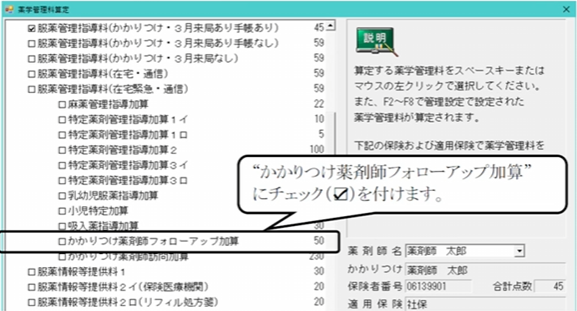
- フォローアップを行った年月日
かかりつけ薬剤師訪問加算新設
- かかりつけ患者宅を訪問し、医療機関へ情報提供した場合に算定（6月に1回・230点）
画面：処方入力画面
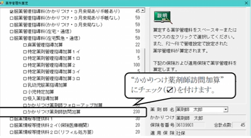
- 訪問指導した年月日
吸入薬指導加算変更
- 算定間隔：3月に1回 → 6月に1回に変更（点数は30点で変更なし）
- 対象疾患にインフルエンザ吸入薬を追加（喘息・COPDに加えて）
画面：処方入力画面
画像準備中
- 吸入薬の調剤年月日
- 吸入薬の名称
服薬管理指導料 3・4変更
- 3：施設訪問（対面）／4イ：施設オンライン・3月以内手帳あり／4ロ・ハ：在宅オンライン／4ニ：その他
- 旧「在宅患者オンライン薬剤管理指導料」は廃止 → 4のロ・ハに統合
画面：薬学管理料算定画面
画像準備中
服薬管理指導料3
- 入所する施設類型を選択（特養ショートステイ介護医療院老健）
4のロ・ハ等を調剤していない月に算定する場合
- 情報提供又は訪問の対象となる調剤年月日と投薬日数を記載
調剤技術料
在宅薬学総合体制加算変更
- 在宅薬学総合体制加算１の入力方法は変更なし
- 在宅薬学総合体制加算２は、確認メッセージが表示される
- 単一建物１人の場合｜「はい」を選択｜イ：100点
- それ以外の場合｜「いいえ」を選択｜ロ：50点
入力画面・確認ポップアップ
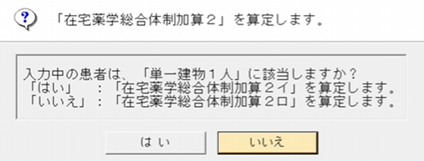
記載不要
バイオ後続品調剤体制加算新設
- バイオ後続品を調剤した場合に算定（インスリン製剤は対象外）
- 処方行の「BS」はバイオ後続品の表示で、加算算定対象を示すものではない（インスリン製剤等は対象外）
画面1：処方入力画面（バイオ後続品は処方行に「BS」表示）
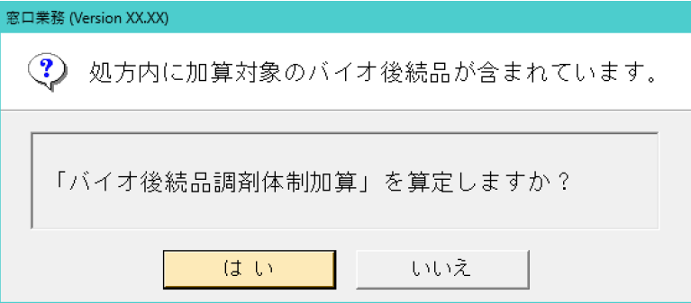
画面2：算定確認ポップアップ（F12会計時）
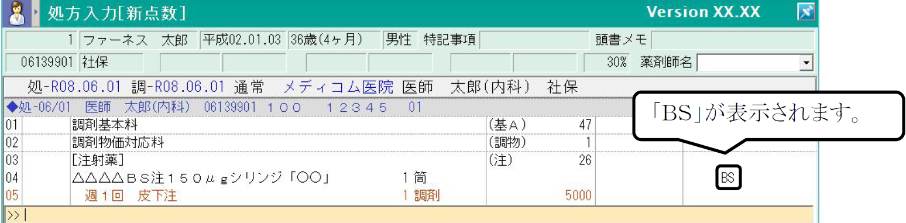
画面3：算定後（加算行が追加・薬剤行に「バ」表示）
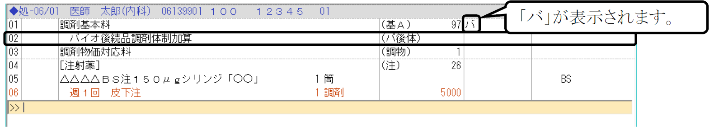
- 一般名処方でバイオ後続品を調剤しなかった場合のみ入力
- 調剤しなかった理由（患者の意向備蓄なし など）を入力
在宅
在宅患者訪問薬剤管理指導料算定間隔変更
- 入力方法は変更なし。従来通り[薬学管理料算定画面]または[処方入力画面]で算定
- 算定間隔：「中6日以上」→ 週1回に変更（週の起算日は日曜）
- 服薬管理指導料4ロ（オンライン）も同様に週1回
- 同一週内で2回以上算定しようとした場合に確認メッセージが表示される
図解：週1回判定（日曜起算・例：6/3水に算定した場合）
6/3(水)
●算定
6/4(木)
6/5(金)
6/6(土)
6/7(日)
6/8(月)
…
※週の起算日は日曜。同一週内（日〜土）で2回以上算定しようとすると確認メッセージが表示される。
画面：確認メッセージ
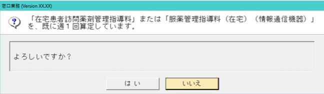
- 単一建物患者数 等
複数名薬剤管理指導訪問料新設
- 2名以上で在宅訪問した場合に算定（同行者は事務員等でも可）。訪問1回300点
- 患者の安全確保が必要な場合に限る（業務効率化目的は不可）
- 「フクスウ」呼び出しで加算・日付・コメントが一括で候補表示される
- 薬学管理料算定画面でも入力可だが、処方入力画面のカナ呼び出しの方が早い
- 在宅患者緊急時等共同指導料・在宅移行初期管理料・訪問薬剤管理医師同時指導料とは同日算定不可（算定チェックが表示される）
画面1：「フクスウ」呼び出しで候補表示
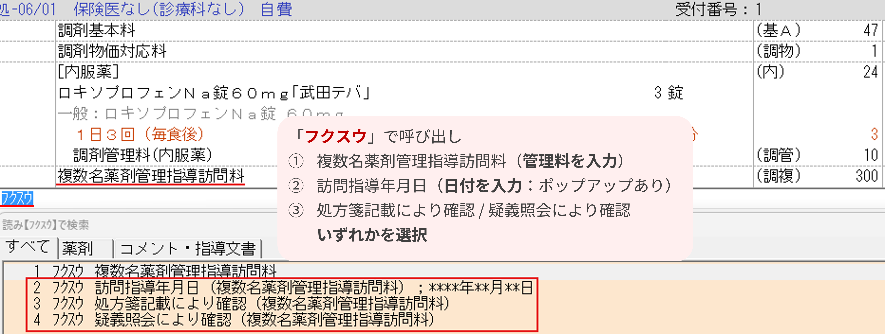
画面2：訪問指導年月日の入力ポップアップ
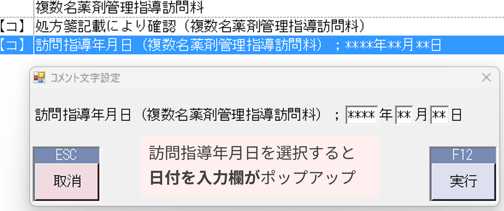
- 訪問年月日
- 処方箋記載により確認または疑義照会により確認のいずれかを選択
補足：算定チェック（同日算定不可の管理料がある場合）
例）在宅患者緊急時等共同指導料の場合
例）在宅患者緊急時等共同指導料の場合
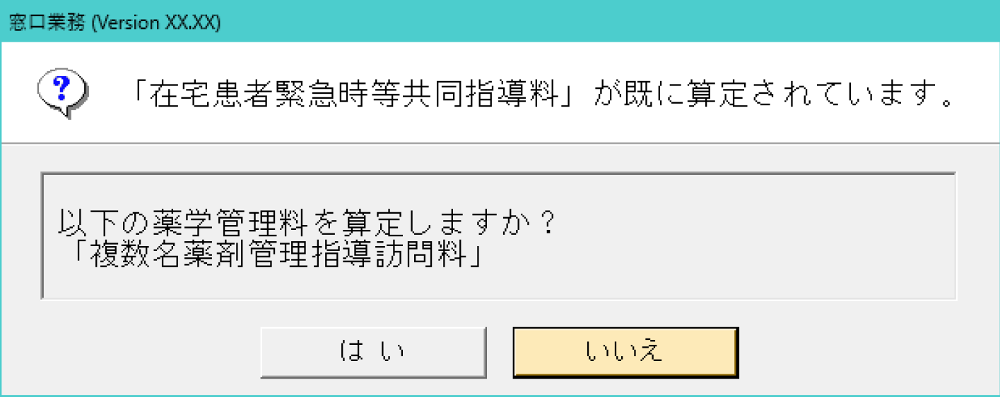
訪問薬剤管理医師同時指導料新設
- 在宅時医学総合管理料を算定中の主治医と同時訪問した場合に算定（6月に1回・150点）
- 対象：単一建物1人の在宅患者
- 「ホウモン」呼び出しで候補表示（夜間・休日加算等のコメントも混在するため、該当する番号のみ選択）
- 薬学管理料算定画面でも入力可だが、処方入力画面のカナ呼び出しの方が早い
- 6月に1回を超える算定や、在宅患者緊急時等共同指導料・在宅移行初期管理料との同日算定不可（算定チェックが表示される）
画面1：「ホウモン」呼び出しで候補表示
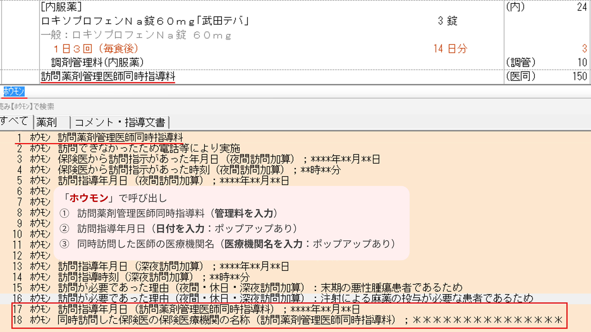
画面2：訪問指導年月日の入力ポップアップ
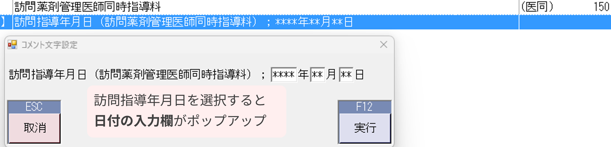
画面3：同時訪問した医師の医療機関名の入力ポップアップ
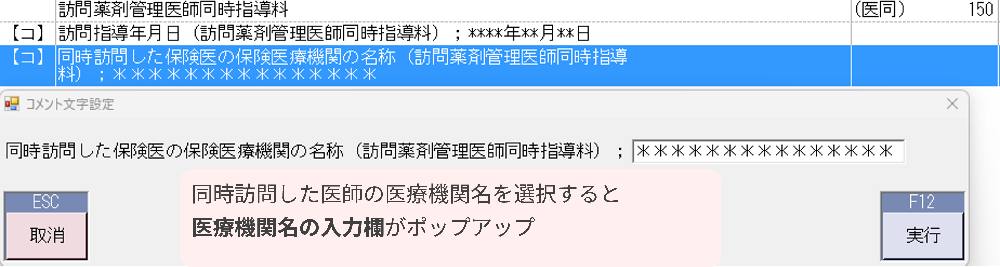
- 訪問年月日
- 同時訪問した医師の医療機関名
補足：算定チェック（6月に1回を超えて算定しようとした場合）
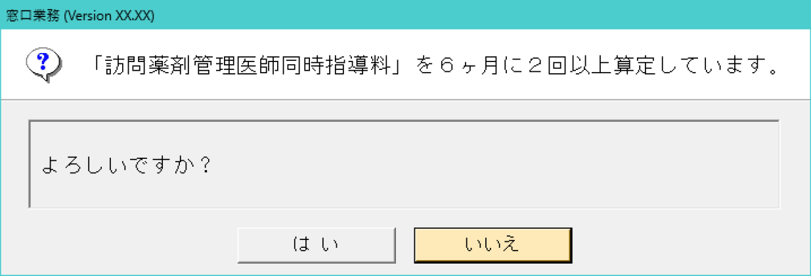
補足：算定チェック（同日算定不可の管理料がある場合）
例）在宅患者緊急時等共同指導料の場合
例）在宅患者緊急時等共同指導料の場合
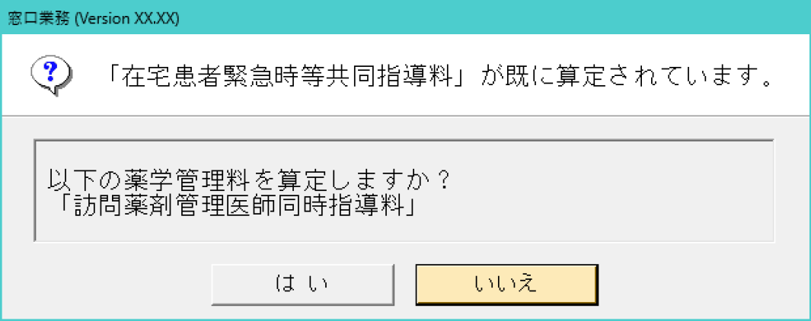
その他
栄養保持を目的とした医薬品新設
- 対象：イノラス／エネーボ／エンシュア・H・リキッド／ツインラインNF／ラコールNF
- 処方箋備考欄に①手術後／②経管栄養／③投与理由 のいずれかの記載が必要
画面：処方入力画面
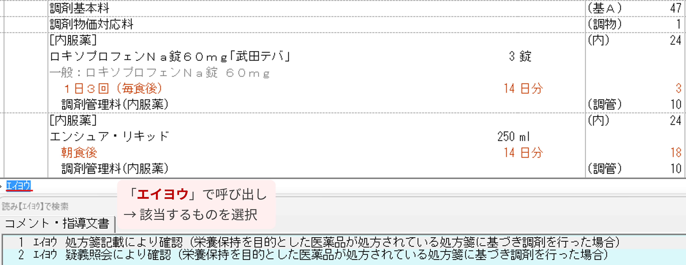
- 処方箋に記載があった場合 →処方箋記載により確認
- 疑義照会で確認した場合 →疑義照会により確認
調剤ベースアップ評価料新設自動算定
- 処方箋受付1回ごとに自動算定（要届出・4点／令和9年6月〜8点）
画面1：処方入力画面（自動算定で「調剤ベースアップ評価料」が表示）
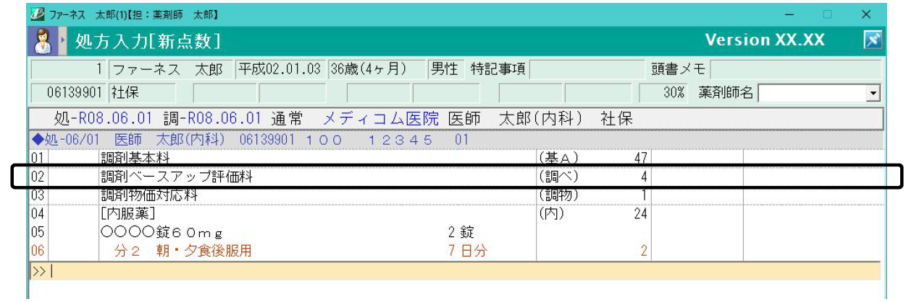
画面2：終会計画面（薬学管理料欄に「調べ」として計上）
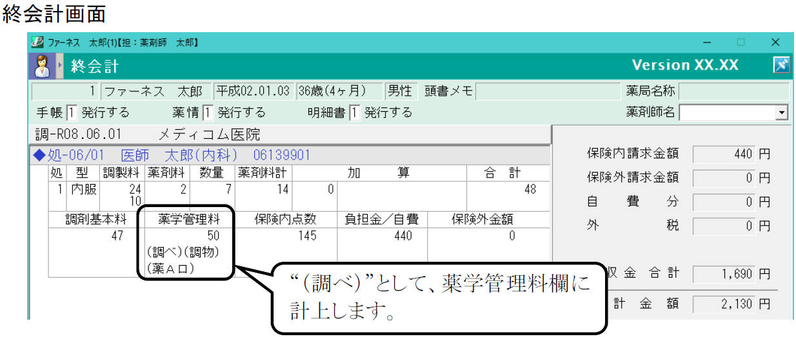
記載不要
調剤物価対応料新設自動算定
- 全患者対象・3月に1回 自動算定（届出不要・1点／令和9年6月〜2点）
画面1：処方入力画面（自動算定で「調剤物価対応料」が表示）
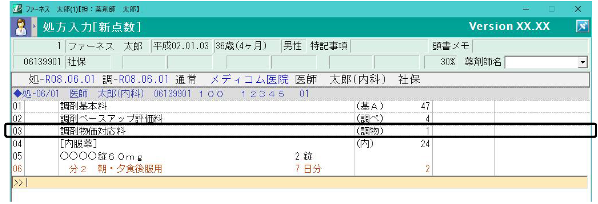
画面2：終会計画面（薬学管理料欄に「調物」として計上）
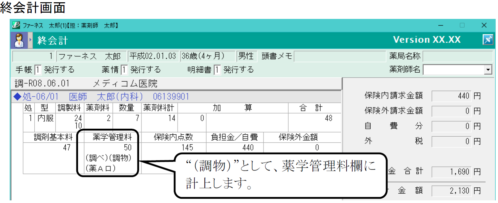
記載不要